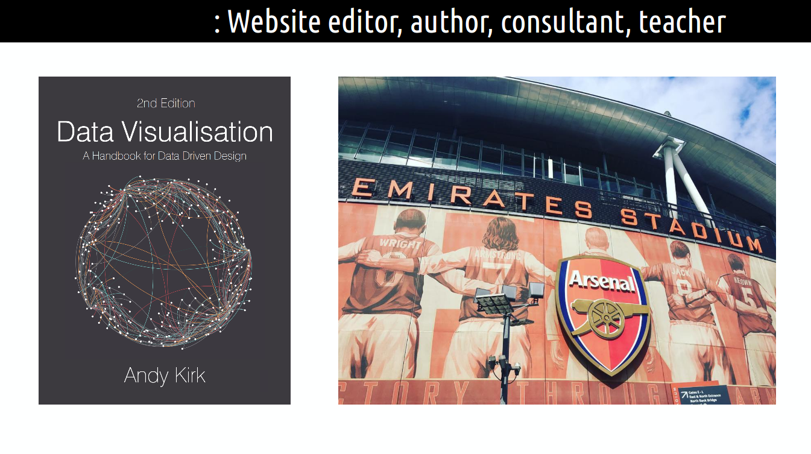

Visualization Module 2020
UCL School of Management
Kyran Dale
Intro
Module divided into two parts:
- Part 1: Andy Kirk teaching a critical, practical, technical understanding of dataviz.
- Part 2: Kyran Dale teaching an introduction to data-visualization for the web.
Part 1, a Critical, Practical and Technical Understanding of Dataviz
- Aims to equip students with a critical, practical and technical understanding of data visualisation.
- Covering the multitude of capabilities ranging from creative and editorial elements...
- ... through to the more scientific and technical aspects.
Dataviz Part 1: Teaching Format
- Based on classroom lectures that will cover the full suite of conceptual, theoretical and practical capabilities
- Supplemented by case study demonstrations and experience from real-life applications
- In-class exercises and course assignments will further embed this learning process.
Dataviz Part 1: Aims
- Students will be able to critically judge the most effective data driven designs in the most efficient way.
- They will develop a comprehensive, contemporary visual vocabulary.
- This will enable them to respond to any analytical and communication challenges they meet in their ongoing careers.
- These skills should be put to use in the initial stage of the Term 3 dissertation.
Andy Kirk
Andy Kirk
Andy Kirk
Andy Kirk
Part 2: Data-vizualisation for the Web
- An introduction to Data-Visualization for the web.
- It will introduce the basic web-dev skills needed to engage with this fast moving field.
- Demonstrating simple but powerful tools (e.g. Leaflet and the three-line web map)
- Plus the more challenging but infinitely flexible D3, a set of powerful visualization modules.
Part 2: Teaching Format
- Primarily workshop based, with a strong emphasis on hands-on learning.
- Students will be guided through the build process of some simple web data visulizations.
- As well as some more challenging D3 based examples.
Data Visualization with Python and JavaScript

The Dataviz Toolchain
Transforming the data
Central Aim of Workshops
- To show that you don't have to be a professional web-developer to get your data out there on the web.
- Demonstrating modern tools and approaches that make it much easier for data analysts, scientists and managers to leverage the enormous power of the web for dataviz dissemination.
Hands on Learning
Much of these skills are craft skills, best learned by doing. The workshops ahead will focus on building some simple data-visualisations, explaining the concepts and idioms as we go.
Learning Outcomes 1
- By the end of this module, students will acquire an approach to manage the process of creating the most effective data visualisation solutions in the most efficient way.
- These skills should be portable for any business context.
- Students will develop a broad understanding of the data visualisation landscape, learning about the contemporary and classic techniques for representing data.
- You will acquire a more sophisticated visualisation vocabulary to portray their data in the most impactful way.
Learning Outcomes 2
- You will learn about the potential of dynamic, web-based visualisation, developing hands-on skills to align with the capabilities expected of the modern-day data visualisation practitioner.
- You will understand the wide range of presentation design options concerning the annotating, colouring, and composing of their work.
- You will learn about the importance of preparatory thinking on your decision-making, including the importance of defining audience, learning about the impact of different types and ranges of data, and the journalistic sensibilities of identifying the most relevant stories.
Key Learning Take
Fundamentally, students will be provided with a framework for them to continue learning about this fast-moving and evolving multi-disciplinary field.
Why Dataviz Must Go To the Web
The humble URL as a token of exchange.
- Cloud servers in a few clicks (AWS, Heroku, DigitalOcean etc.)
- JFiddle, JSBin et. al. - demo live JavaScript visualisations.
- http://blockbuilder.org/ - Github gists to D3 visualisations (11,000 examples!).
- Rich ecosystem, skills freely traded, standards rising inexorably.
- Barriers to entry dropping all the time...
Concluding Thoughts
- Dataviz is not optional.
- If you can't visualize your data for others you probably don't understand it.
- Basic ability to bring refined data to the web is within everyone's grasp.
- You don't have to be a professional web-developer - many tools to hand.
- By the end of this module you should be able to compose and implement a simple but effective web data visualization.